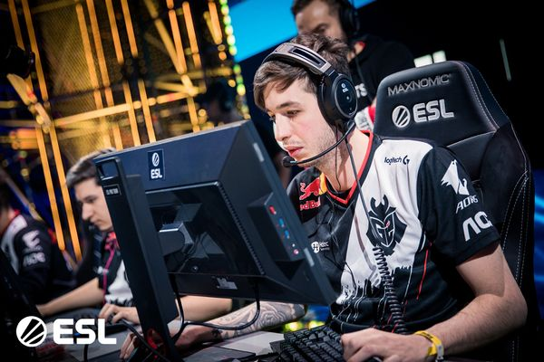
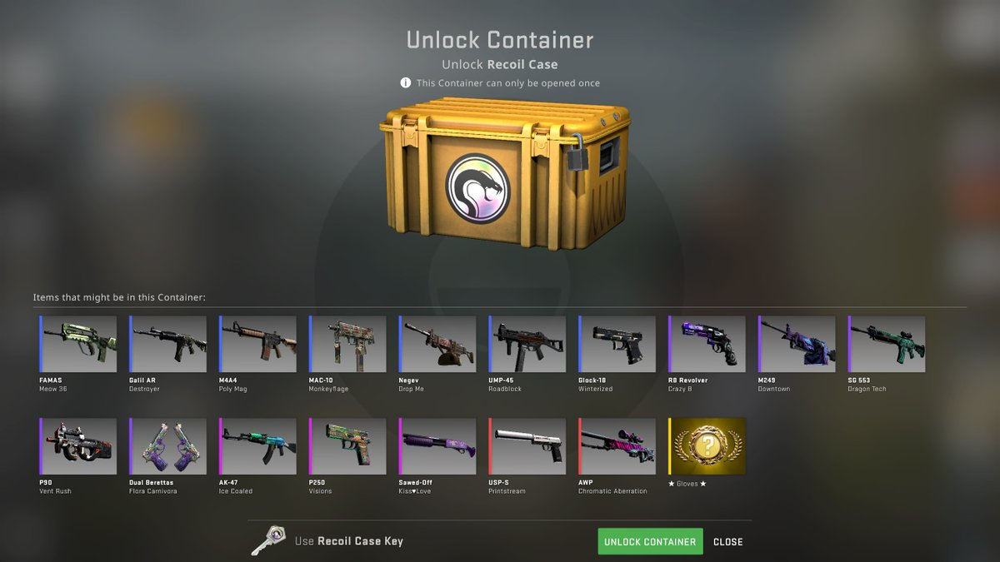
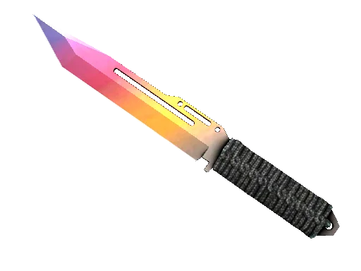
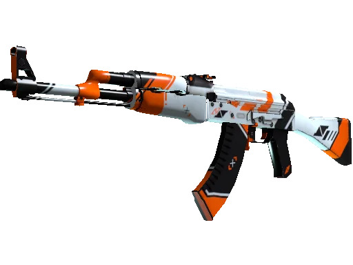
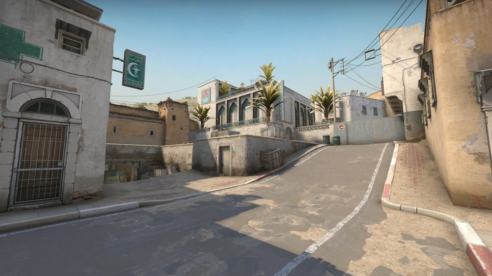
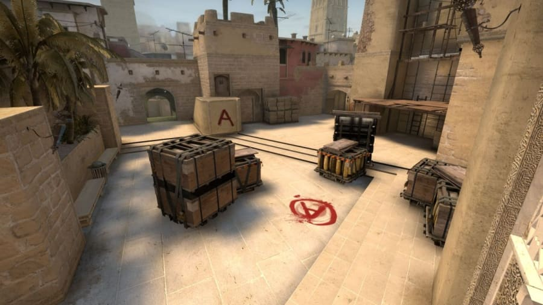
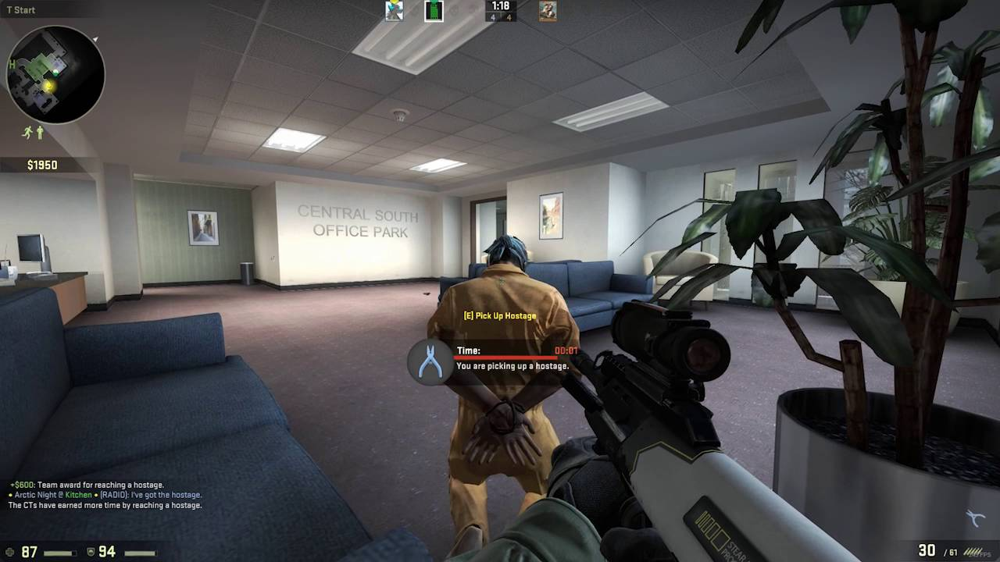

Pro player KennyS playing at IEM Katowice 2020.
CS:GO Cases and Skins

CS:GO cases for cosmetics skins. Players can open cases for weapons skins which they can use in game.

A CS:GO skin for knifes.

A CS:GO skin for in-game weapon AK-47.
Game Maps and Modes

Screenshot of the map Dust 2.

Screenshot of the map Mirage. Terrorists needs plant the bomb near the marking A. And the Counter-terrorists needs to defuse the planted bomb.Screenshot of the map Inferno.

Screenshot of Hostage Scenario mode. The man in orange is the hostage to rescue.